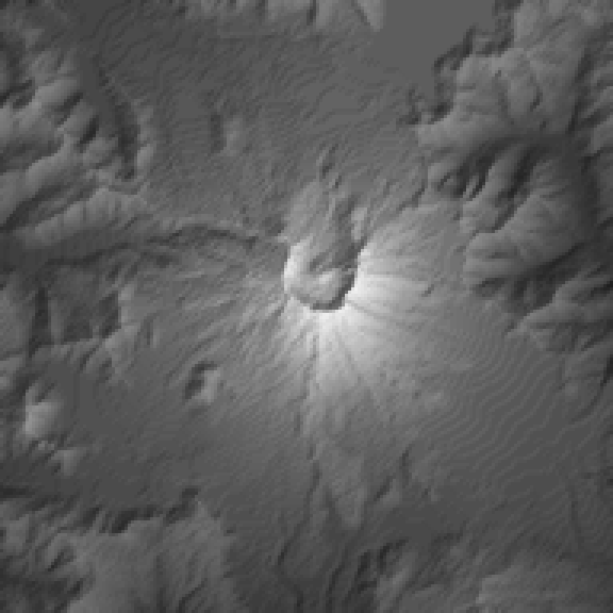
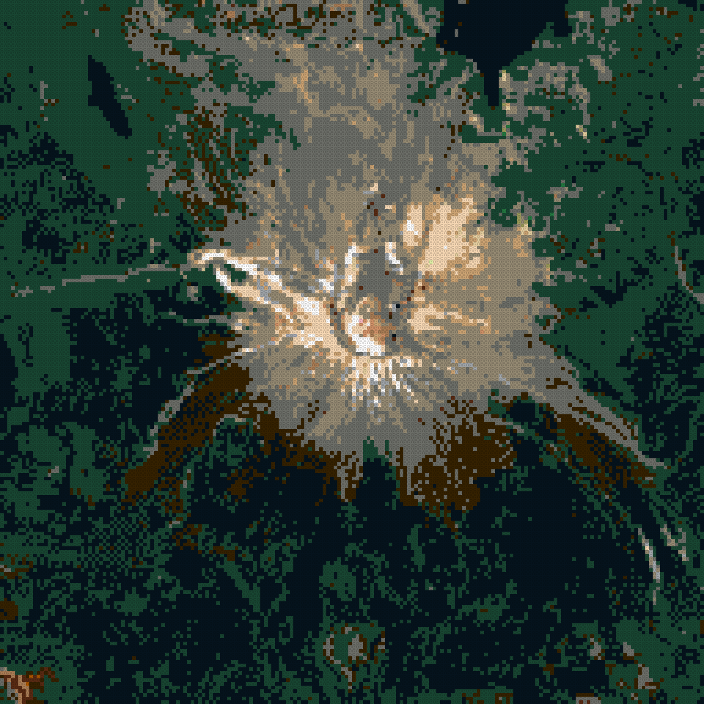
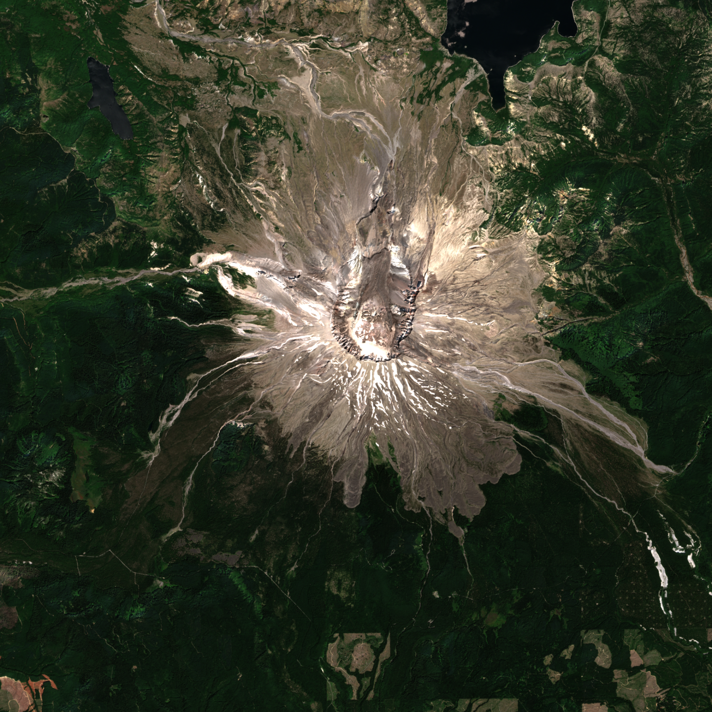

run mount-st-helens-20261001T161623 · generator 0.1.0+6c8eab4-dirty · catalog lego-1x1-2026-10-01 · status complete
· variant
max height 79 plates = 252.8 mm · open whole-mountain 3D view



| footprint | 1536.0 × 1536.0 mm (192 × 192 studs) |
|---|---|
| geographic area | 18.00 × 18.00 km, 93.75 m per stud, EPSG:26910 |
| datum | 529.5 m (raw DEM min 515.6 m) |
| summit | 2516.4 m stud-mean at stud [95, 96] (source max 2538.6 m) |
| relief above datum | 1986.9 m |
| meters per plate (1×) | 37.500 |
| max height x1.5 | 79 plates / 252.8 mm |
| LDraw 288 | 12897 studs |
| LDraw 0 | 11416 studs |
| LDraw 72 | 5506 studs |
| LDraw 28 | 2977 studs |
| LDraw 308 | 2426 studs |
| LDraw 78 | 588 studs |
| LDraw 371 | 466 studs |
| LDraw 15 | 163 studs |
| LDraw 71 | 153 studs |
| LDraw 84 | 112 studs |
| LDraw 70 | 56 studs |
| LDraw 19 | 40 studs |
| LDraw 92 | 30 studs |
| LDraw 80 | 13 studs |
| LDraw 330 | 10 studs |
| LDraw 2 | 6 studs |
| LDraw 484 | 3 studs |
| LDraw 326 | 1 studs |
| LDraw 430 | 1 studs |
| role | provider / dataset | date | license · attribution |
|---|---|---|---|
| elevation | USGS 3DEP 3DEPElevation (Bare Earth DEM Dynamic) | None | Public domain USGS 3D Elevation Program (3DEP) |
| imagery | Element84 Earth Search sentinel-2-l2a | 2025-08-12 | Copernicus Sentinel data terms Contains modified Copernicus Sentinel data 2025 |
| PASS | coverage_complete | non-finite DEM px: 0; non-finite imagery px: 0 |
| PASS | dem_imagery_aligned | 2 grids share bounds EPSG:26910; max extent mismatch 0.000 m |
| PASS | every_stud_has_elevation | 36864 studs |
| PASS | every_stud_has_allowed_color | all colors in catalog |
| PASS | no_terrain_below_datum | min plates per exaggeration: {'x1.5': 0} |
| PASS | quant_error_within_half_plate | max |error| plates: {'x1.5': 0.5} |
| PASS | catalog_colors_currently_produced | 19 colors used; not currently produced: [] |
| PASS | terrain_colors_plate_buildable | every used color is produced as a 1x1 plate |
| PASS | summit_position | DEM max in stud (94, 95); highest stud (95, 96); offset 1 stud(s) |
| PASS | exaggeration_invariance | 1 exaggerations share footprint [(192, 192)] and one color array per color setting (colors are computed independently of exaggeration) |
| PASS | viewer_written | 1 whole-mountain 3D viewer(s) |
| PASS | ldraw_valid:x1.5_sentinel2@2025-08-12_average_diffusion0.10 | 95836 elements checked |
| PASS | ldraw_seams:x1.5_sentinel2@2025-08-12_average_diffusion0.10 | module files together equal the full model |
{
"schemaVersion": 1,
"runId": "mount-st-helens-20261001T161623",
"status": "complete",
"generatorVersion": "0.1.0+6c8eab4-dirty",
"createdAt": "2026-10-01T16:16:25+00:00",
"preset": {
"id": "mount-st-helens",
"name": "Mount St Helens",
"center": {
"lat": 46.1912,
"lon": -122.1944
},
"boundingBox": {
"widthKm": 18,
"heightKm": 18
},
"targetStudWidth": 192,
"moduleStudSize": 64,
"surfaceResolutionStuds": 1,
"verticalExaggeration": 2,
"datumMode": "surrounding-minimum",
"viewpoints": [
{
"name": "Johnston Ridge",
"bearingDeg": 349,
"elevationDeg": 15
},
{
"name": "Windy Ridge",
"bearingDeg": 42,
"elevationDeg": 20
},
{
"name": "Portland",
"bearingDeg": 206,
"elevationDeg": 8
}
]
},
"bounds": {
"crs": "EPSG:26910",
"minE": 553164.0,
"minN": 5106607.0,
"maxE": 571164.0,
"maxN": 5124607.0,
"metersPerStud": 93.75,
"studWidth": 192,
"studHeight": 192
},
"scale": {
"metersPerPlateTrueScale": 37.5,
"exaggerations": [
1.5
]
},
"datum": {
"mode": "surrounding-minimum",
"elevationM": 529.4836883544922,
"rawDemMinM": 515.6480712890625
},
"sources": [
{
"role": "elevation",
"provider": "USGS 3DEP",
"dataset": "3DEPElevation (Bare Earth DEM Dynamic)",
"sourceUrls": [
"https://elevation.nationalmap.gov/arcgis/rest/services/3DEPElevation/ImageServer/exportImage"
],
"itemIds": [],
"acquisitionDate": null,
"nativeResolutionM": 1.0,
"analysisGridPx": 1920,
"nativeCrs": "EPSG:26910",
"license": "Public domain",
"attribution": "USGS 3D Elevation Program (3DEP)",
"cacheKeys": [
"46293be8e1f50da95d933a91aa7030f8370eba012117781d031e02bfa42f7329",
"1b86d1e155be2668736ca5762f8d05f9f5eda76bc42a6b8c5ebbe2efd934face",
"3f34803d843dfda6338458deb0b26db6397abc79e6b6642f377f864274fad451",
"09ad6e8dd2006757da7a23685806936c89fc3deb537bba589140a6f8cda396b1",
"ac50c579d14b7add618c52d5462de72f91754bbd5020269b5b5098b1c7f5011b",
"32d2f1f322059053cd966208f5b31d475f16ad8f1a3760fba271d301605ce392",
"1a69fbdf28073fa76ce6bd5fd3ff85be3d5a6a4845cbff5dcfbcdbb422675548",
"c3faf1eb2e52ce95fc5592e173a1b2a9547aa2063e2e2ebe1d7e0ecc4e6cf9a2",
"96c73b599d106aa392cdbc041dee180792e90d3d7c6c76d66d54b2a88bc73443",
"5fd41861bc86891571a6da1dc2b5d8d549882201bbf4212a736c0c9dbf0cc7ce",
"484021784c10ee81e97cdd3d6dcbb393cae8ffa14c4a3d44b602a71319ddb1b1",
"ffec7e8cc0348e4cf7d794ef48202a96433f890a427bf803b8e9683e25666230",
"9f756f618eed5297f500446b71a51683e58c7254a061219039323a79a1e966ac",
"c23a1d403bea3432fb565fc3082f908e74111140a2216e68e3c4db7e5021153d",
"8e5c05432e2d0970f0c386af5020d14bf7fe4e72d73c4b83aa1ea9848efd76e7",
"39c7f42edd750e56281fbef0c9fa6c1e322d9dda6f817d053f15fd89b1f7bc12"
]
},
{
"role": "imagery",
"provider": "Element84 Earth Search",
"dataset": "sentinel-2-l2a",
"sourceUrls": [
"https://sentinel-cogs.s3.us-west-2.amazonaws.com/sentinel-s2-l2a-cogs/10/T/ES/2025/8/S2C_10TES_20250812_0_L2A/TCI.tif"
],
"itemIds": [
"S2C_10TES_20250812_0_L2A"
],
"acquisitionDate": "2025-08-12",
"nativeResolutionM": 10.0,
"analysisGridPx": 1920,
"nativeCrs": "EPSG:32610",
"license": "Copernicus Sentinel data terms",
"attribution": "Contains modified Copernicus Sentinel data 2025",
"cacheKeys": [
"dafa81318d2c9e15887913f03de11f67b5d4cbcca118aa83fe2d5a224da86bf9",
"2040c6315e8bd3a73e497b0f92e51b402b50923d922441ffff025f1fc534d4ef"
],
"imageryKey": "sentinel2",
"notes": [
"tiles ['10TES']; WGS84 UTM -> NAD83 UTM datum offset (~1-2 m) treated as zero (datumOffsetNote); SCL cloud/shadow fraction 0.0000%"
]
}
],
"catalog": {
"version": "lego-1x1-2026-10-01",
"sha256": "313a874bc2e3b9a52333454ffbe36a7d309261fd5b5deb0fcd496c8ef2922d2d",
"terrainPalette": {
"rule": "colors currently produced as 1x1 plate (3024)",
"size": 47,
"excluded": []
}
},
"variants": [
{
"key": "x1.5_sentinel2@2025-08-12_average_diffusion0.10",
"verticalExaggeration": 1.5,
"color": {
"imagerySource": "sentinel2",
"imageryDate": "2025-08-12",
"sampling": "average",
"assignment": "diffusion",
"diffusionStrength": 0.1
},
"metrics": {
"maxHeightPlates": 79,
"maxHeightMm": 252.8,
"colorDistribution": {
"0": 11416,
"2": 6,
"15": 163,
"19": 40,
"28": 2977,
"70": 56,
"71": 153,
"72": 5506,
"78": 588,
"80": 13,
"84": 112,
"92": 30,
"288": 12897,
"308": 2426,
"326": 1,
"330": 10,
"371": 466,
"430": 1,
"484": 3
}
}
}
],
"summary": {
"geographicWidthM": 18000.0,
"geographicHeightM": 18000.0,
"physicalWidthMm": 1536.0,
"physicalDepthMm": 1536.0,
"summitStud": [
95,
96
],
"summitElevationM": 2516.3845678710936,
"summitSourceElevationM": 2538.5830078125,
"reliefM": 1986.9008795166014
},
"outputs": {
"canonical": {
"path": "canonical.npz",
"sha256": "ee9b51895d00eb75e64eca3c779e5db7a826557f2be545596e24fa5a7fd9a4b7"
},
"preview:height-x1.5": {
"path": "previews/height-x1.5.png",
"sha256": "04ad8c5dda8f34e92955364af70f44ea1e4584eed06002b3e865ea9180571775"
},
"preview:color-sentinel2@2025-08-12_average_diffusion0.10": {
"path": "previews/color-sentinel2@2025-08-12_average_diffusion0.10.png",
"sha256": "58f000295760baec216f89772cc9bcee5b8a0b9506a6404caffc2b19f0e1f3e9"
},
"preview:imagery-sentinel2@2025-08-12": {
"path": "previews/imagery-sentinel2@2025-08-12.png",
"sha256": "3c95bb737ed6b569631204f56912ebd3203d3cc26bd77668fb212c7b18c4ab1c"
},
"viewer:x1.5_sentinel2@2025-08-12_average_diffusion0.10": {
"path": "viewer/x1.5_sentinel2@2025-08-12_average_diffusion0.10.html",
"sha256": "752a20a9ff0308dc33ab75cf0aaf340eed178128f7717524f4ed917bd1f0d845"
},
"ldraw:x1.5_sentinel2@2025-08-12_average_diffusion0.10:Module_A1": {
"path": "ldraw/x1.5_sentinel2@2025-08-12_average_diffusion0.10/Module_A1.ldr",
"sha256": "1413cd08ac11c814ad1ecba5d10dfab8b2d5230859b8d63e5c893c823ad824f6"
},
"ldraw:x1.5_sentinel2@2025-08-12_average_diffusion0.10:Module_A2": {
"path": "ldraw/x1.5_sentinel2@2025-08-12_average_diffusion0.10/Module_A2.ldr",
"sha256": "218514f0011270044745cc1b4357c0a2a07ece1b7ddad02a65b004f74b42e4a1"
},
"ldraw:x1.5_sentinel2@2025-08-12_average_diffusion0.10:Module_A3": {
"path": "ldraw/x1.5_sentinel2@2025-08-12_average_diffusion0.10/Module_A3.ldr",
"sha256": "d228b01fcc587d7d71a84b93ddef8be045de6885805c01d8075e10c912fb7e01"
},
"ldraw:x1.5_sentinel2@2025-08-12_average_diffusion0.10:Module_B1": {
"path": "ldraw/x1.5_sentinel2@2025-08-12_average_diffusion0.10/Module_B1.ldr",
"sha256": "854c3eb24d7c44bcc7124f72bf47c10a103e4f4aa4e84e8cf1ffbdab77ab039b"
},
"ldraw:x1.5_sentinel2@2025-08-12_average_diffusion0.10:Module_B2": {
"path": "ldraw/x1.5_sentinel2@2025-08-12_average_diffusion0.10/Module_B2.ldr",
"sha256": "d7977c282fd640d1aa0c66973e56d60bcf74d896df6cbe37be56e99c2ea35d36"
},
"ldraw:x1.5_sentinel2@2025-08-12_average_diffusion0.10:Module_B3": {
"path": "ldraw/x1.5_sentinel2@2025-08-12_average_diffusion0.10/Module_B3.ldr",
"sha256": "9667a9b837e7cfc0f290dc910fdd79ab032e707874cfcd51c85c6dc6e0364c7d"
},
"ldraw:x1.5_sentinel2@2025-08-12_average_diffusion0.10:Module_C1": {
"path": "ldraw/x1.5_sentinel2@2025-08-12_average_diffusion0.10/Module_C1.ldr",
"sha256": "db16ed7b717fb95516e6b0191c549727614550d544d3ee60f0b5dc68ccb7fdd4"
},
"ldraw:x1.5_sentinel2@2025-08-12_average_diffusion0.10:Module_C2": {
"path": "ldraw/x1.5_sentinel2@2025-08-12_average_diffusion0.10/Module_C2.ldr",
"sha256": "9b8bba3757a599d2f21d5e63bd9ba7a009b9f1cb274ec786ba5f21e1ca4aa2b6"
},
"ldraw:x1.5_sentinel2@2025-08-12_average_diffusion0.10:Module_C3": {
"path": "ldraw/x1.5_sentinel2@2025-08-12_average_diffusion0.10/Module_C3.ldr",
"sha256": "6bf1dfaf660f4ed27db1d640f7e5266694a87b010dcfd17c6bb277bcf25cbc0a"
},
"ldraw:x1.5_sentinel2@2025-08-12_average_diffusion0.10:full": {
"path": "ldraw/x1.5_sentinel2@2025-08-12_average_diffusion0.10/Mount_St_Helens.mpd",
"sha256": "9f1cee22e836307d91c56aa4ff6ec0077542b436a74fb542f28c197f1a13ae29"
}
},
"validation": [
{
"check": "coverage_complete",
"passed": true,
"detail": "non-finite DEM px: 0; non-finite imagery px: 0"
},
{
"check": "dem_imagery_aligned",
"passed": true,
"detail": "2 grids share bounds EPSG:26910; max extent mismatch 0.000 m"
},
{
"check": "every_stud_has_elevation",
"passed": true,
"detail": "36864 studs"
},
{
"check": "every_stud_has_allowed_color",
"passed": true,
"detail": "all colors in catalog"
},
{
"check": "no_terrain_below_datum",
"passed": true,
"detail": "min plates per exaggeration: {'x1.5': 0}"
},
{
"check": "quant_error_within_half_plate",
"passed": true,
"detail": "max |error| plates: {'x1.5': 0.5}"
},
{
"check": "catalog_colors_currently_produced",
"passed": true,
"detail": "19 colors used; not currently produced: []"
},
{
"check": "terrain_colors_plate_buildable",
"passed": true,
"detail": "every used color is produced as a 1x1 plate"
},
{
"check": "summit_position",
"passed": true,
"detail": "DEM max in stud (94, 95); highest stud (95, 96); offset 1 stud(s)"
},
{
"check": "exaggeration_invariance",
"passed": true,
"detail": "1 exaggerations share footprint [(192, 192)] and one color array per color setting (colors are computed independently of exaggeration)"
},
{
"check": "viewer_written",
"passed": true,
"detail": "1 whole-mountain 3D viewer(s)"
},
{
"check": "ldraw_valid:x1.5_sentinel2@2025-08-12_average_diffusion0.10",
"passed": true,
"detail": "95836 elements checked"
},
{
"check": "ldraw_seams:x1.5_sentinel2@2025-08-12_average_diffusion0.10",
"passed": true,
"detail": "module files together equal the full model"
}
],
"exportMode": "both",
"ldrawCounts": {
"x1.5_sentinel2@2025-08-12_average_diffusion0.10": {
"Module_A1": 5638,
"Module_A2": 5490,
"Module_A3": 5324,
"Module_B1": 4892,
"Module_B2": 5772,
"Module_B3": 4688,
"Module_C1": 6193,
"Module_C2": 5204,
"Module_C3": 4717,
"Mount_St_Helens": 47918
}
}
}